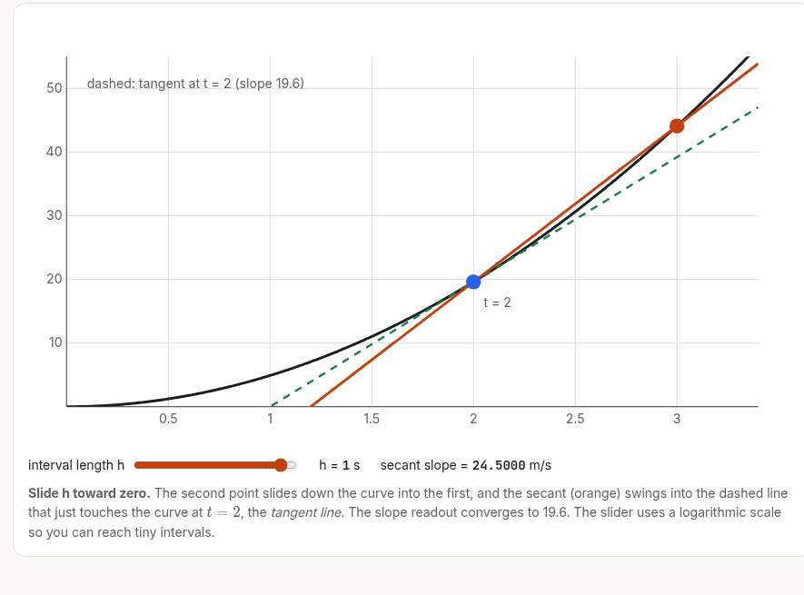
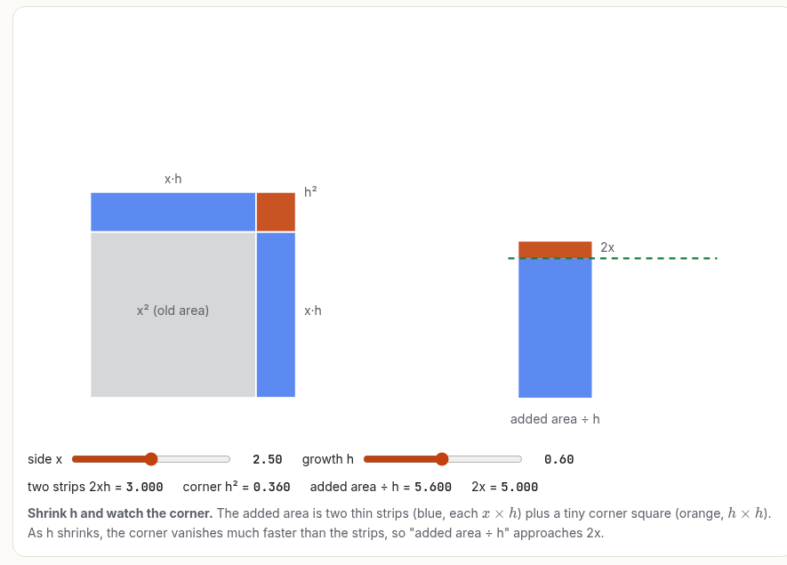

Stop getting summaries. Start getting lessons. eureka turns Claude into a professor who builds hard ideas from the ground up, with every component explained, every step derived, and every idea something you can play with.
An open-source skill for Claude Code and Claude.ai, inspired by the teaching of 3Blue1Brown and StatQuest (not affiliated).


What makes it different
Problem firstEvery lesson makes the problem understandable before the solution, so the concept arrives as the answer you were looking for.
Component by componentIt maps every idea a topic depends on and teaches each one fully before combining them. Nothing is name-dropped.
Every equation earnedSymbols defined, the form explained, every derivation step justified. No "after some algebra".
Verified, not just generatedInteractive lessons are tested in a headless browser and inspected from screenshots before you see them.
Your format, made exceptional
Interactive HTML lessons with live widgets · PDF textbook chapters · slides for lectures · Jupyter notebooks as computational labs · simulations · animations · or plain chat. eureka asks which you want.
Install in one line
git clone https://github.com/mahdi13830510/eureka ~/.claude/skills/eureka
Then, in Claude Code: /eureka teach me eigenvectors as an interactive lesson. For Claude.ai, upload eureka.zip under Settings → Capabilities → Skills.